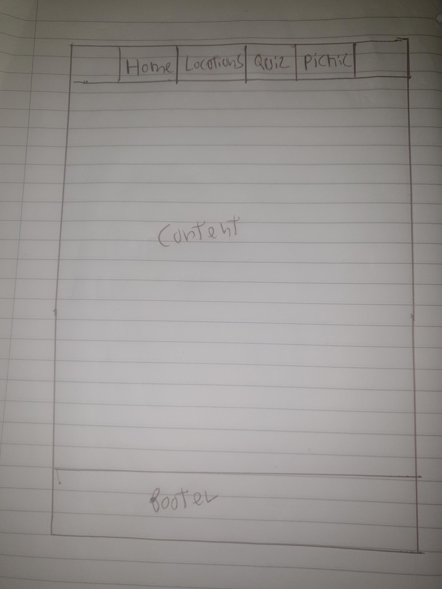
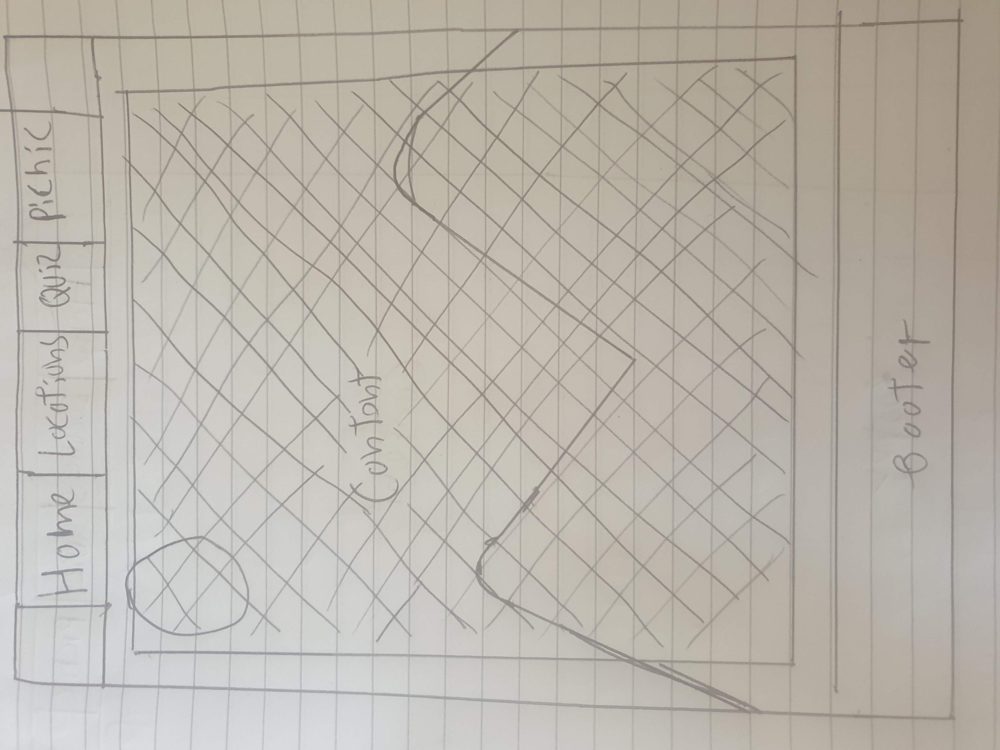
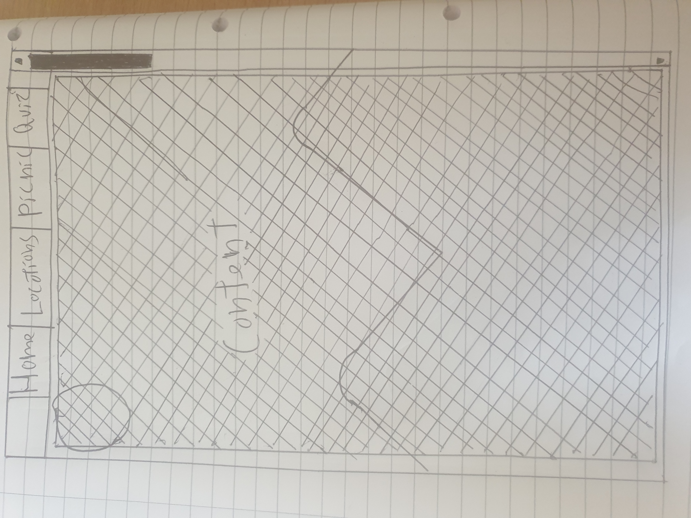
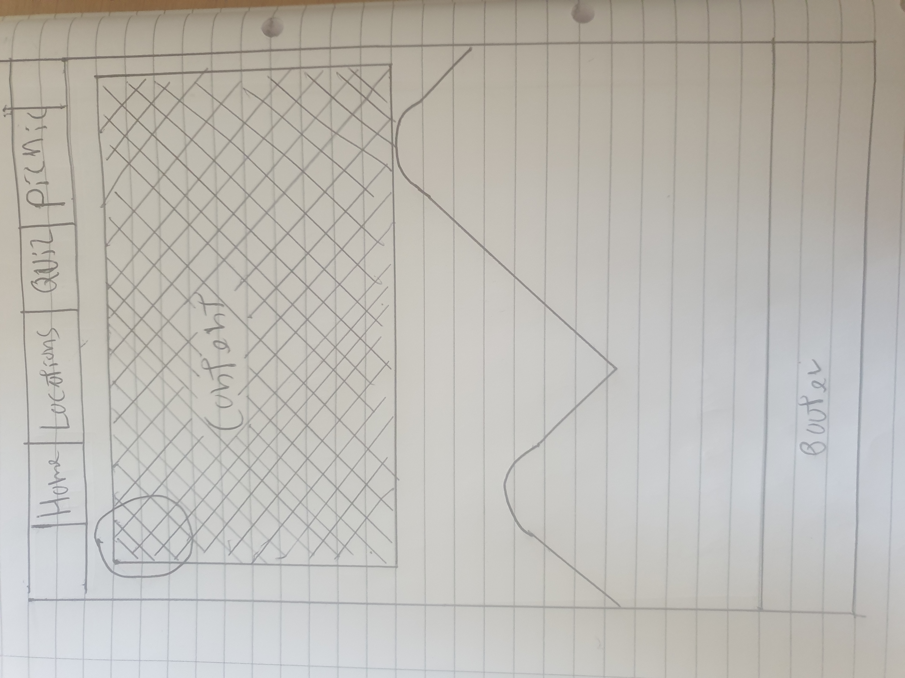
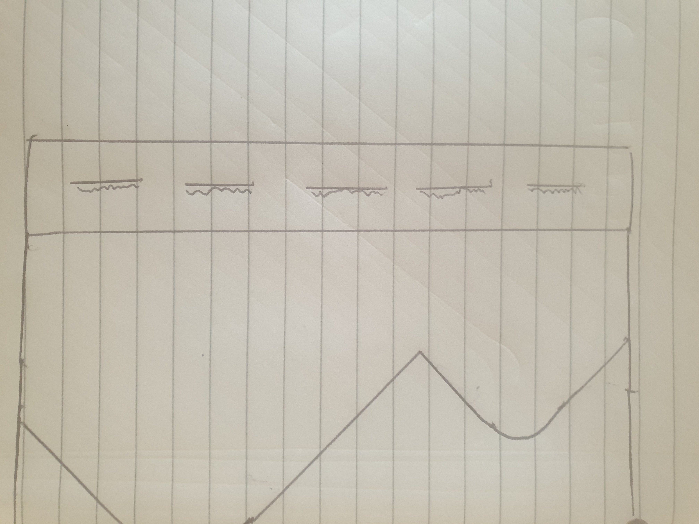

sources: w3schools
The website is designed using google chrome's in browser mobile development tools primarily assuming that the user will be using an up to date chrome browser.
the website is designed to have a modern yet somewhat less formal design done through the use of images and avoiding a design that focuses on pushing a user through a process
the website almost exclusively uses %, vh and vw measurements to respond to the size of the users view-port and the font size of these measurements is different for mobile and desktop screen sizes for the main menu in the header using the @media tags. Mobile browsers are also catered for using the meta viewport tag in the header of each page. For the rest of the page images are fixed to 24% of view-port height, direction buttons to 10%. Font is decided by the browsers defaults as in testing this scaled well with the veiw-port and I like how the screen configured itself.




The Idea for this design started with a header that could remain similar no matter the view-port or browser, that would handle the main and most popular navigation options. A footer for less important parts of the site, or important information, as both of these simplistic designs could be made reliably responsive and be easy and intuitive to use. Next I added a background-image to the design to make it less soleless and give me something that I could use to associate the site to the university, whilst making it more interesting to the user I felt that it would also help give the site a more modern look and feel. Then I decided what should happen if the content does not fit the view-port perfectly. If the content does not fill the page then the box it is contained in should be only as large as the content to show more of the Image and make the design feel more intentional. If the content is larger than the size of the view-port and will not fit on one page then a scroll bar should appear to show the user how far down the page they are, to prompt them to scroll through it footer should also not appear until user is at bottom of the page to make more space for displaying content.

Next I need to decide how to display the menu for the less important non-content pages. I had the choice of laying them out In the same way as the header or using a popup menu. I decided to lay them out as it would lead to a more accessible interface that could be used by more people. I then decided that the design of these should be more minimalist than the header to avoid making the screen appear cultured or bringing the users attention to them instead of the header or content of the webpage.